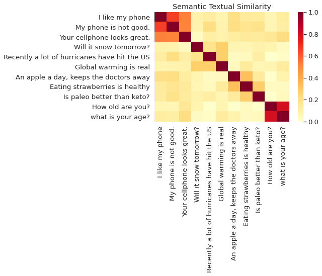

Universal Sentence Encoder
import tensorflow_hub as hub
from sklearn.metrics.pairwise import cosine_similarity
import seaborn as sns
import numpy as np
/usr/local/lib/python3.6/dist-packages/statsmodels/tools/_testing.py:19: FutureWarning: pandas.util.testing is deprecated. Use the functions in the public API at pandas.testing instead.
import pandas.util.testing as tm
Loading the universal sentence encoder
The USE model can be downloaded from TF-Hub. In Tensorflow 2, the model is in eager execution mode, hence the embeddings can be easily obtained.
module_url = "https://tfhub.dev/google/universal-sentence-encoder/4" #@param ["https://tfhub.dev/google/universal-sentence-encoder/4", "https://tfhub.dev/google/universal-sentence-encoder-large/5"]
model = hub.load(module_url)
print ("module %s loaded" % module_url)
def embed(input):
return model(input)
module https://tfhub.dev/google/universal-sentence-encoder/4 loaded
Obtaining Embeddings
embedding=embed(["This is an elephant"])
embedding.shape
TensorShape([1, 512])
embedding=embed(["This is an elephant","Today is my birthday"])
embedding.shape
TensorShape([2, 512])
Calculating similarity between the embeddings
embedding_1=embed(["This is an elephant"])
embedding_2=embed(["Design theory has been approached and interpreted in many ways, from personal statements of design principles, \
through constructs of the philosophy of design to a search for a design science."])
cosine_similarity(embedding_1,embedding_2)
array([[0.04448269]], dtype=float32)
embedding_1=embed(["Design thinking is a non-linear, iterative process that teams use to understand users, challenge assumptions, \
redefine problems and create innovative solutions to prototype and test."])
embedding_2=embed(["Design theory has been approached and interpreted in many ways, from personal statements of design principles, \
through constructs of the philosophy of design to a search for a design science."])
cosine_similarity(embedding_1,embedding_2)
array([[0.44332415]], dtype=float32)
Visualizing text similarity
def plot_similarity(labels, features, rotation):
corr = np.inner(features, features)
sns.set(font_scale=1.2)
g = sns.heatmap(
corr,
xticklabels=labels,
yticklabels=labels,
vmin=0,
vmax=1,
cmap="YlOrRd")
g.set_xticklabels(labels, rotation=rotation)
g.set_title("Semantic Textual Similarity")
def run_and_plot(messages_):
message_embeddings_ = embed(messages_)
plot_similarity(messages_, message_embeddings_, 90)
messages = [
# Smartphones
"I like my phone",
"My phone is not good.",
"Your cellphone looks great.",
# Weather
"Will it snow tomorrow?",
"Recently a lot of hurricanes have hit the US",
"Global warming is real",
# Food and health
"An apple a day, keeps the doctors away",
"Eating strawberries is healthy",
"Is paleo better than keto?",
# Asking about age
"How old are you?",
"what is your age?",
]
run_and_plot(messages)
